VLM Scene Captioning#
비전-언어 모델(VLM)은 시각적 콘텐츠와 텍스트 설명 간의 복잡한 관계를 학습하기 위해 이미지-캡션 쌍 데이터셋에 의존합니다. 캡션은 모델이 이미지 내의 오브젝트, 행동 및 컨텍스트를 이해하는 데 필요한 의미론적 기반을 제공합니다. 고품질 캡션은 미묘한 씬 이해 및 추론이 가능한 VLM을 훈련하는 데 필수적입니다.
NVIDIA Omniverse의 3D 지상 진실(ground truth)을 활용하면 상세하고 정확하며 확장 가능한 어노테이션을 통해 캡셔닝 프로세스를 혁신할 수 있습니다. 이 캡션에는 전체 씬 설명, 오브젝트 관계, 카메라 뷰에서 요소 간의 상대적 위치 및 상호작용과 같은 공간적 추론이 포함됩니다. 3D 메타데이터를 통해 캡션은 가시적인 것뿐만 아니라 요소가 어떻게 배열되고 상호작용하는지를 설명하여 더 풍부한 컨텍스트 이해를 제공합니다.
이 접근 방식은 더 일관되고 다양한 데이터셋을 보장하여 VLM이 공간적 추론 및 씬 분석과 같은 복잡한 작업에서 탁월한 성능을 발휘하고 궁극적으로 시각적 이해와 언어적 이해 사이의 간격을 좁힐 수 있게 합니다.
Isaacsim.Replicator.Caption.Core(IRC)의 기능:
Omniverse에서 로드된 씬에 대한 이미지-캡션 쌍을 생성합니다.
런타임에 각 프레임에 대한 캡션을 생성하기 위해
Isaacsim.replicator.object (IRO)와Isaacsim.replicator.agent (IRA)를 포함한 다른Isaacsim.Replicator모듈과 연결됩니다.커스터마이징된 후처리 및 캡션 준비를 위해 씬 그래프를 캡션 출력과 함께 내보냅니다.
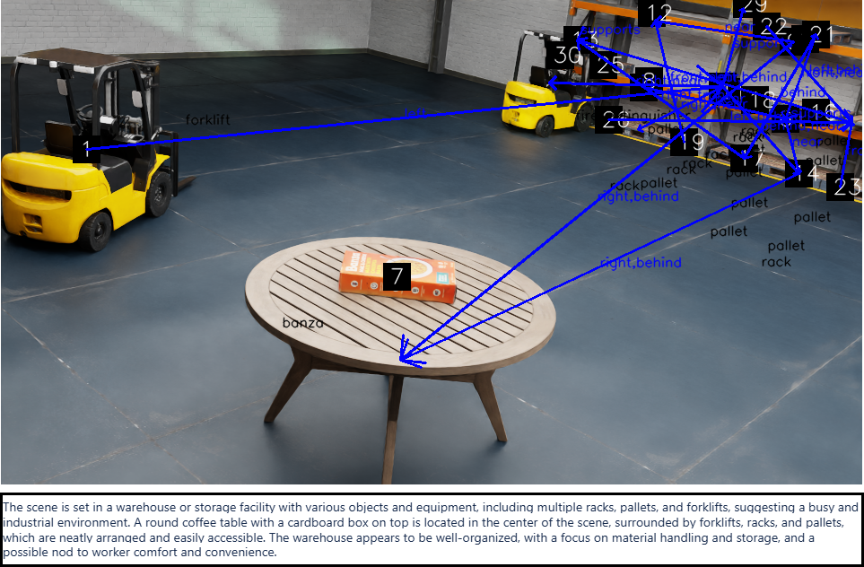
Python API#
IRC는 프로그래밍 방식의 모델 설정 및 캡션 생성을 위한 Python API(CaptionAPI)를 제공합니다:
참고
아래 스니펫은 NVIDIA_API_KEY 환경 변수에서 모델 API 키를 읽습니다. NVIDIA NIM API 키 페이지에서 자신의 키를 생성하고 스크립트를 실행하기 전에 내보내십시오(예: export NVIDIA_API_KEY=<API_KEY>).
import os
from isaacsim.replicator.caption.core.api import CaptionAPI
def setup_irc_model():
CaptionAPI.set_model_params(
url="https://integrate.api.nvidia.com/v1",
name="meta/llama-3.1-8b-instruct",
key=os.environ["NVIDIA_API_KEY"],
)
print("IRC model params set successfully.")
setup_irc_model()
모델을 설정한 후 프로그래밍 방식으로 캡션을 생성할 수 있습니다:
import asyncio
from isaacsim.replicator.caption.core.api import CaptionAPI
def on_done(future):
captions = future.result()
print(f"Generated captions: {captions}")
task = asyncio.ensure_future(CaptionAPI.get_captions())
task.add_done_callback(on_done)
캡션을 생성하기 전에 IRC 설정 파일을 로드할 수도 있습니다:
from isaacsim.replicator.caption.core.api import CaptionAPI
CaptionAPI.load_config_file("/path/to/irc_config.yaml")
Workflow#
Isaacsim.Replicator.Caption.Core는 다음 워크플로를 사용하여 캡션을 생성합니다:
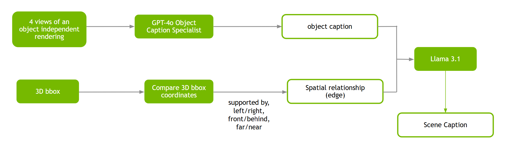
Scene Graph#
씬 그래프는 캡션 생성을 위한 중간 출력입니다. 노드가 오브젝트를 나타내고 엣지가 오브젝트 간의 공간적 관계를 나타내는 시각적 씬의 구조화된 표현입니다. 요소들이 공간에서 어떻게 배열되는지(예: 상대적 위치와 방향)를 캡처합니다. 예를 들어 나무 아래 벤치에 앉은 사람의 이미지에서 그래프에는 "사람", "벤치", "나무" 노드와 "앉아 있는" 및 "아래" 등의 엣지가 포함됩니다. 이 공간적 초점은 씬 그래프를 상세한 공간적 추론과 씬 분석이 필요한 작업에 유용하게 만듭니다.
특정 요구사항에 맞게 씬 그래프 데이터를 유연하고 커스터마이징 가능한 방식으로 관리하기 위해 씬 그래프를 캡션 출력과 함께 내보낼 수 있습니다.
Enable Isaacsim.Replicator.Caption.Core Extension#
Omniverse Extension Manager 가이드를 따라
isaacsim.replicator.caption.core익스텐션을 활성화합니다.익스텐션은 시작 시 Isaac Sim Assets에서 샘플 에셋을 가져옵니다. 에셋 로딩에 문제가 발생하면 Isaac Sim Assets를 참고하십시오.
UI 로딩이 멈추는 것처럼 보이면
--/persistent/isaac/asset_root/timeout=1.0플래그로 Isaac Sim을 시작해 보십시오.
IRC UI 패널은 Tools > Action and Event Data Generation > VLM Scene Captioning으로 접근할 수 있으며 화면 오른쪽에 열립니다.
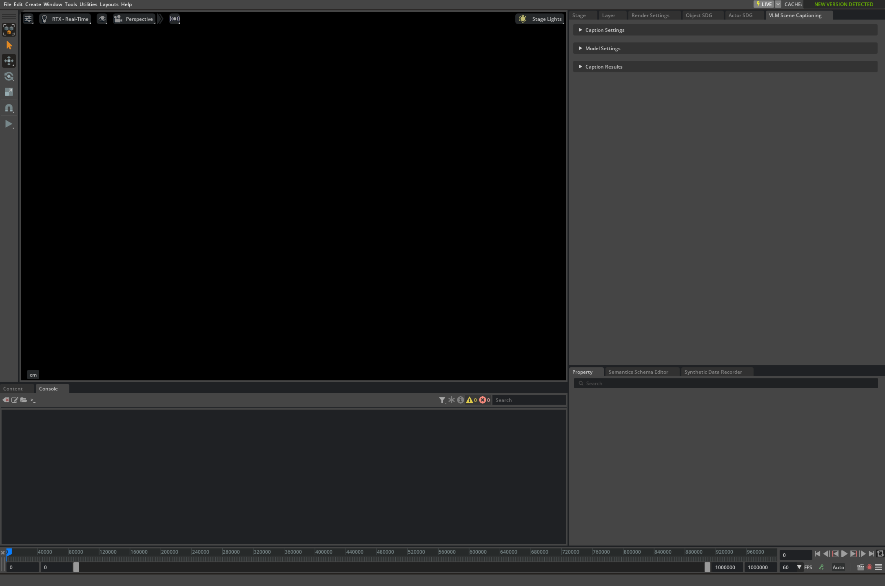
IRC는 다음 방법으로 호출할 수 있습니다:
Using the UI Panel#
UI 패널로 씬 캡션 생성을 실행하려면:
활성화하면 익스텐션이 UI 패널에 나타납니다:
스테이지 USD 파일을 로드하려면
Caption Settings패널을 열고 파일 선택기 아이콘을 클릭합니다.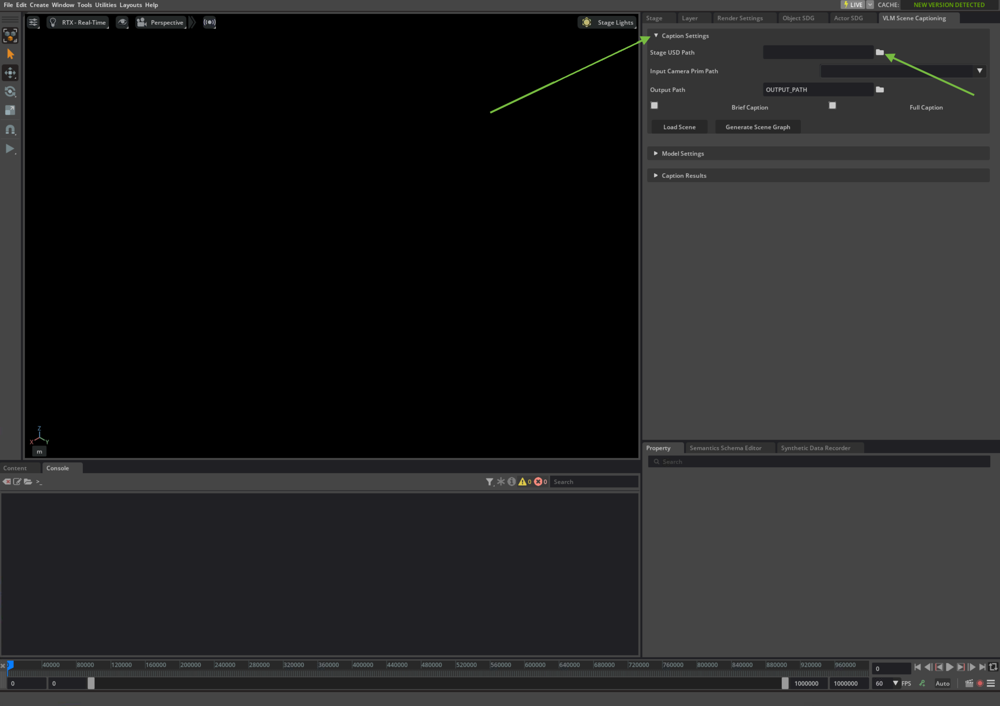
캡션을 생성하려는 USD 파일을 선택합니다. 데모용 기본 USD 파일이 있습니다.
참고
We include an example USD. You can find it in[Isaac Sim Assets Path]/Samples/Replicator/Captioning/test_caption.usda.[Isaac Sim Assets Path]is the path to Isaac Sim AssetsRefer to Isaac Sim Assets Check for how to verify the assets access and how to retrieve the asset path.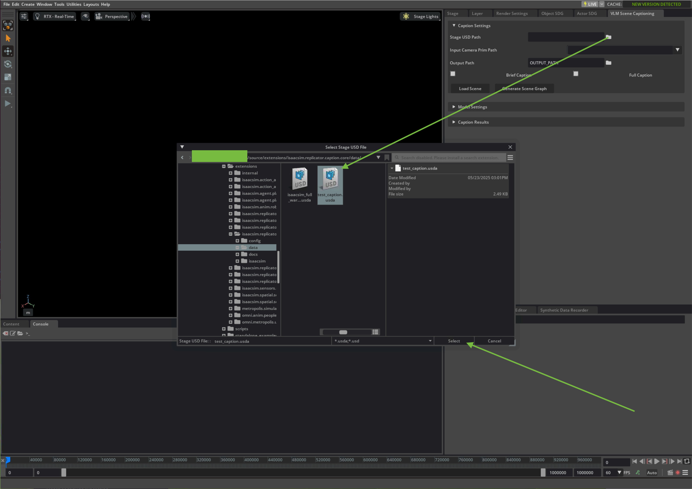
Load Scene 버튼을 클릭하여 씬을 로드합니다.
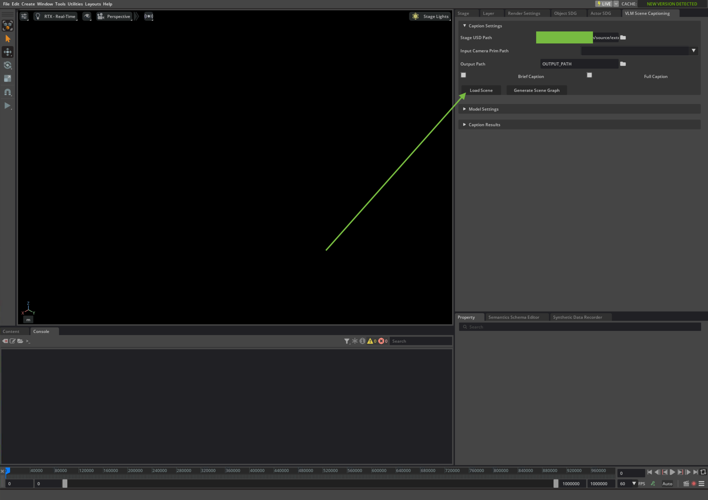
스테이지가 스테이지 뷰에 로드됩니다. 스크립트 실행 활성화 여부를 묻는 메시지가 표시되면 Yes를 클릭합니다.
Model Settings 패널의 API 키 필드에 LLM 모델 자격 증명을 입력하고 Accept를 클릭하여 계속합니다.
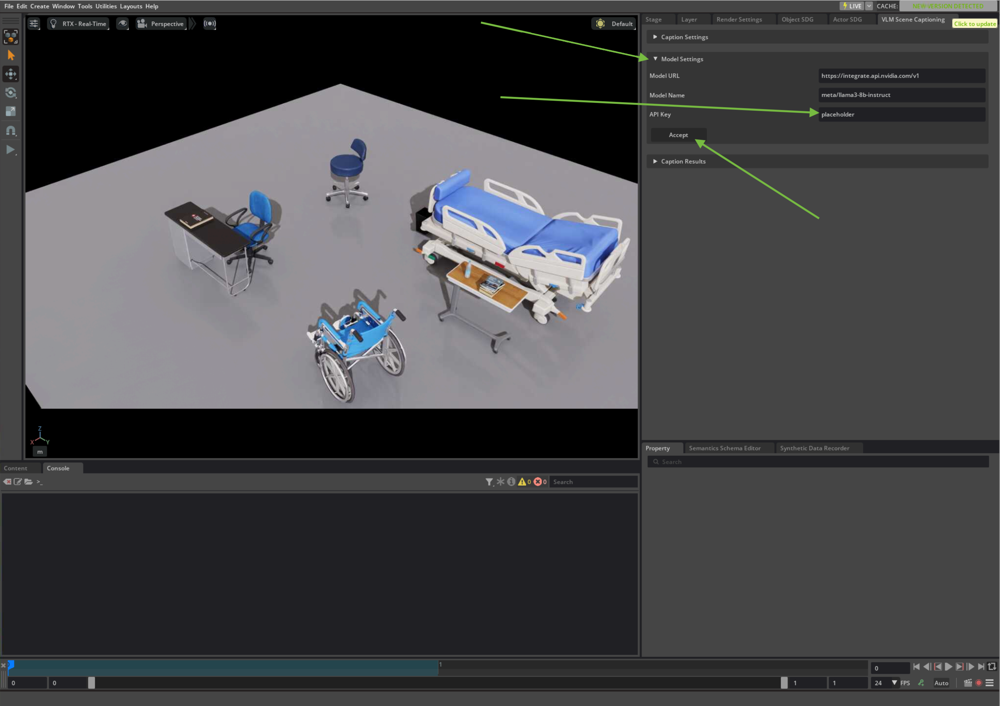
Caption Settings 패널에서 원하는 캡션 수준(간략 설명의 경우 Brief Caption, 더 상세한 설명의 경우 Full Caption)을 입력합니다. Input Camera Prim Path 필드에 카메라 프림 경로를 입력합니다. 생성된 캡션, 관련 씬 그래프 및 메타데이터를 저장할 위치를 지정하기 위해 Output Path를 입력합니다. 출력 경로가 유효한 디렉터리인지 확인하십시오. Generate Scene Graph를 클릭합니다.
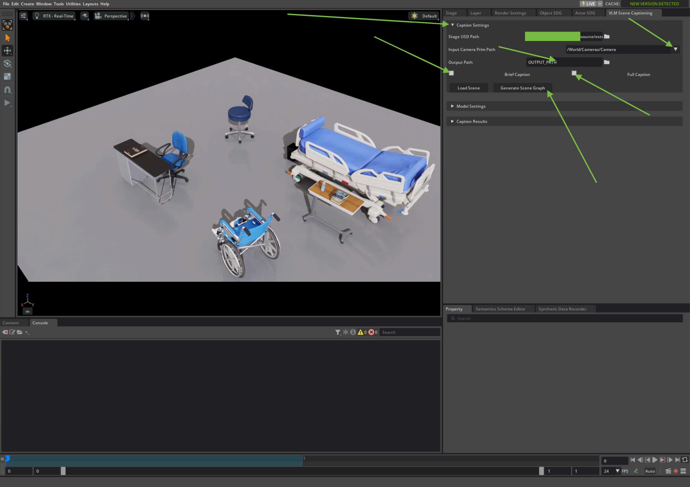
참고
기본 서비스 URL과 모델 이름은 편의를 위해 제공됩니다. 서비스는 NVIDIA가 호스팅하며 체험판으로 무료로 제공됩니다. 기본 모델과 관련된 서비스에 접근할 수 없는 경우 NVIDIA NIM API 참조 페이지에서 사용 가능한 모델 중 다른 모델을 선택할 수 있습니다. Model Settings 패널의 Model Name 필드에 모델 식별자를 입력합니다.
NVIDIA NIM을 얻어 로컬에서 호스팅하는 것도 가능합니다. 자세한 내용은 NVIDIA의 NIM 페이지를 방문하십시오.
씬 그래프, 캡션 및 해당 이미지가 생성되어 출력 디렉터리에 저장됩니다.
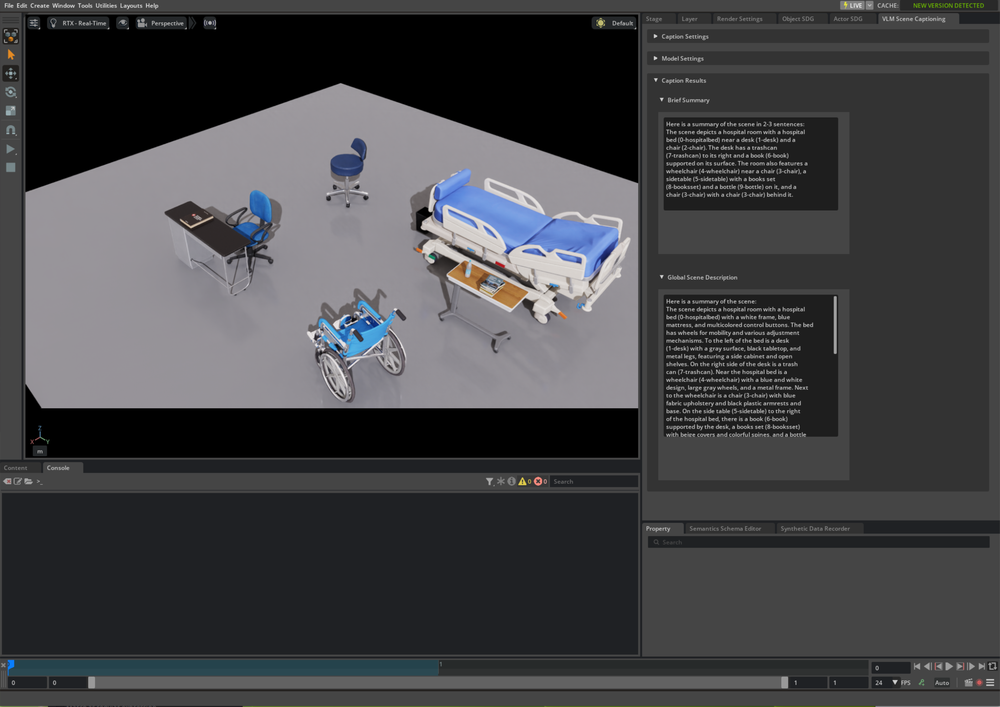
참고
관심 영역(ROI)에 대한 캡션을 생성하려면 아래와 같이 카메라 드롭다운에서 원하는 카메라를 선택합니다:
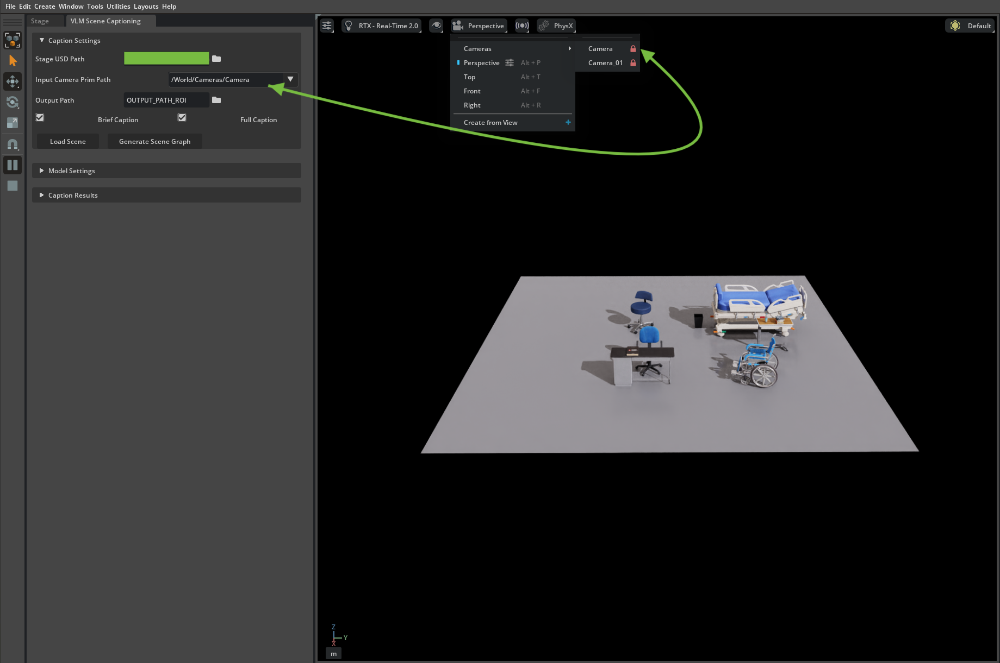
ROI가 뷰 플레인을 지배하도록 아래와 같이 카메라를 원하는 위치에 배치합니다:
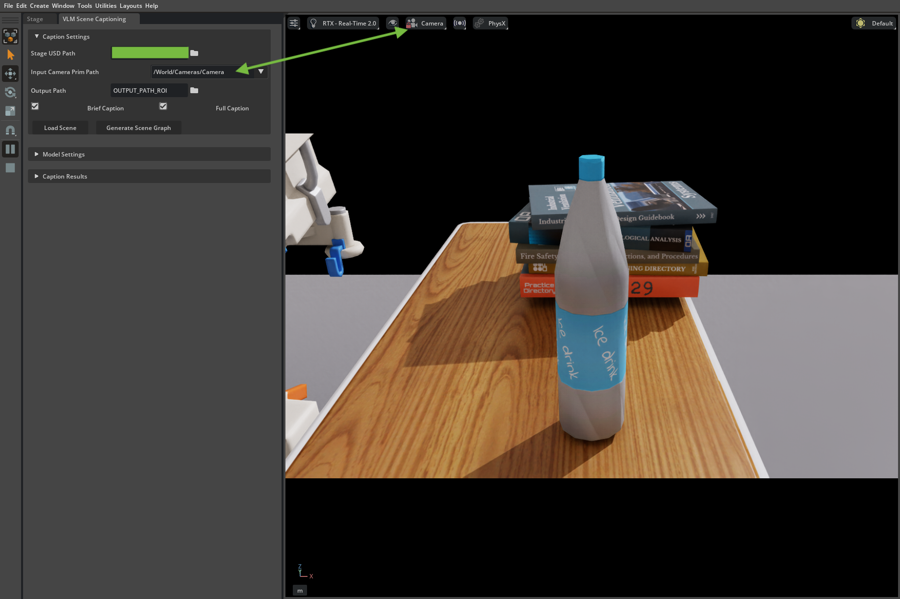
앞 단계에서 설명한 원하는 캡션 및 출력 매개변수를 선택한 후 Generate Scene Graph 버튼을 클릭하여 ROI의 캡션을 생성합니다.
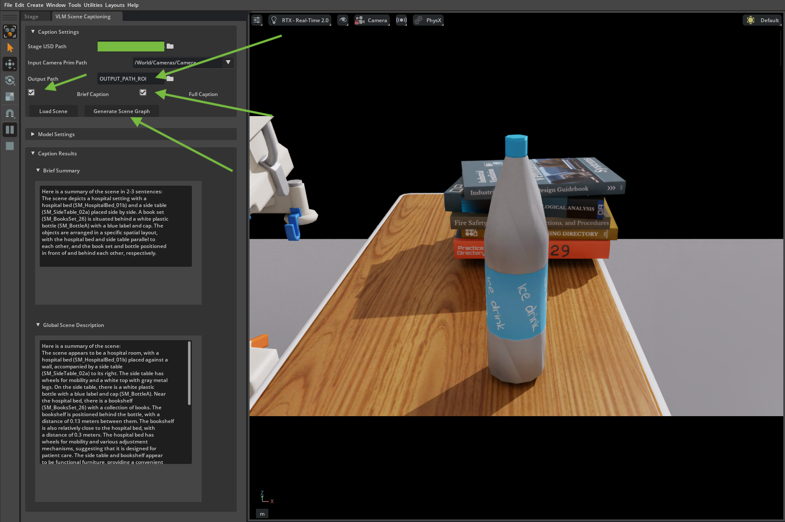
Using the IRA Extension#
IRA로 씬 캡션 생성을 실행하려면 YAML 설정 파일을 로드합니다. 또는 익스텐션과 함께 제공되는 기본 설정 파일을 사용하고 아래 단계를 따라 일부 환경 변수를 준비합니다.
IRO와 IRA 아래에서 익스텐션을 실행하는 데 사용되는 IRC 설정 파일의 구조를 설명합니다.
익스텐션에서 사용할 NVIDIA NIM API 키를 준비합니다.
익스텐션은 캡션을 생성하기 위해 NVIDIA NIM AI가 필요합니다. 자격 증명은 환경 변수에 저장되어야 합니다.
Linux/Mac:
~/.bashrc또는~/.bash_profile에 추가합니다:export NVIDIA_API_KEY=<API_KEY>
Windows:
Command Prompt:
set NVIDIA_API_KEY=<API_KEY>
참고
NVIDIA NIM API 키는 제한된 수명을 가집니다. 무료 크레딧 수는 제한되어 있으며 API 키와 연결된 계정을 통해 접근할 수 있습니다. 크레딧이 소진된 후에는 개발자 포털을 통해 추가 크레딧을 신청할 수 있습니다. 자세한 내용은 개발자 포럼을 참고하십시오.
캡션 없이 씬 그래프만 생성해야 하는 경우 AI 자격 증명이 필요하지 않습니다.
Example Isaacsim.Replicator.Caption.Core Configuration File#
예를 들어 설정 파일은 다음과 유사합니다:
isaacsim.replicator.caption.core:
version: 0.6.6
camera_prim_path: /World/Cameras/Camera
scene_path: USD_FILE
caption_configs:
save_full_scene_graph: true
save_pruned_scene_graph: true
attach_label_to_usd: false
use_ai_label: false
visualize_caption: true
max_object_capacity: 100
export_edges: true
global_caption: true
qa_caption: false
brief_caption: true
pruning_ratio: 1.0
verbose: true
random_seed: 0
caption_only: false
export_world: true
output_path: OUTPUT_PATH
Global Properties#
version
IRC 익스텐션의 버전입니다. 버전이 일치하지 않으면 익스텐션이 작동하지 않습니다.
camera_prim_path
씬의 카메라 프림 경로입니다. 제공하지 않으면 익스텐션이 default_config.yaml 파일에 정의된 기본 카메라 경로를 사용합니다. 그러나 씬에 카메라가 없으면 익스텐션이 작동하지 않습니다.
카메라가 씬에서 사용 가능한지 보장해야 합니다.
scene_path
씬 USD 파일의 경로입니다. 익스텐션은 이 경로에서 씬을 로드할 수 있습니다. 그러나 scene_path를 제공하지 않으면 익스텐션이 앱에 로드된 씬을 사용합니다. 씬이 로드되지 않으면 익스텐션이 작동하지 않습니다.
output_path
생성된 캡션이 저장될 출력 디렉터리의 경로입니다. 제공하지 않으면 익스텐션이 기본 출력 경로를 사용합니다.
Caption Configurations#
save_full_scene_graph
True이면 출력 디렉터리에 전체 씬 그래프를 저장합니다.
파일은 <output_path>/<Camera Prim Name>/Captions/full_scene_graph.json으로 저장됩니다.
save_pruned_scene_graph
True이면 출력 디렉터리에 가지치기된 씬 그래프를 저장합니다. 전체 씬 그래프에는 Support Tree의 동일 수준에 있는 두 오브젝트 간의 엣지가 포함됩니다.
파일은 <output_path>/<Camera Prim Name>/Captions/pruned_scene_graph.json으로 저장됩니다.
참고
Support Tree: 씬의 오브젝트 간 공간적 관계를 나타내는 트리입니다. 트리의 루트는 바닥(0번째 수준)입니다. 루트의 직접 자식은 바닥의 오브젝트(1번째 수준)입니다. 2번째 수준의 오브젝트는 1번째 수준의 오브젝트에 의해 지지되는 오브젝트이며, 이하 동일합니다.
pruning_ratio
가지치기할 씬 그래프의 비율입니다. 씬 그래프는 최소 신장 트리(MST)로 가지치기됩니다.
가지치기 비율은 유지할 MST 엣지의 백분율을 결정합니다. 예를 들어 pruning_ratio가 0.5로 설정되면 씬 그래프는 MST 엣지의 50%로 가지치기됩니다.
기본적으로 pruning_ratio는 1.0으로 설정되어 있으며, 이는 MST가 생성된 후 씬 그래프가 더 이상 가지치기되지 않음을 의미합니다.
random_seed
무작위 프로세스를 위한 정수입니다. pruning_ratio가 1.0보다 작으면 엣지가 MST에서 무작위로 제거됩니다. 무작위 시드는 이 프로세스의 무작위성을 제어하는 데 사용됩니다.
attach_label_to_usd
True이면 씬에서 USD 주소가 있는 모든 프림에 자동 생성된 시맨틱 레이블이 첨부됩니다(프림에 미리 첨부된 시맨틱 레이블이 없는 경우).
자동 시맨틱 레이블은 프림 경로 기본 이름을 기반으로 합니다. 예를 들어 프림 경로가 /World/Objects/Chair이면 시맨틱 레이블은 Chair가 됩니다.
시맨틱 레이블이 첨부되면 Omniverse 어노테이터가 정의된 어노테이션에 대한 프림을 캡처할 수 있습니다. 어노테이터에 캡처되지 않은 프림은 씬 그래프에 포함될 수 없으므로 캡션 작업에 중요합니다.
use_ai_label
True이면 씬의 시맨틱 레이블이 있는 프림에 AI 생성 레이블을 사용합니다. AI 생성 레이블은 데이터베이스에 전처리되어 저장되며 런타임에 데이터베이스에서 가져옵니다. 이 기능은 대상 프림에 시맨틱 레이블이 씬 파일에 미리 저장되지 않은 경우를 처리하기 위해 attach_label_to_usd: true와 조합할 수 있습니다.
visualize_caption
True이면 출력 이미지에 씬 그래프를 시각화합니다. 시각화는 <output_path>/<Camera Prim Name>/Captions/vis_camera_scene_graph.jpg로 저장됩니다.
max_object_capacity
씬 그래프에 포함될 수 있는 최대 오브젝트 수입니다. 오브젝트는 카메라 뷰에서 2D 바운딩 박스 크기에 따라 역순으로 선택됩니다.
export_edges
True이면 씬 그래프의 엣지가 씬 그래프 파일로 내보내집니다. 엣지는 오브젝트 간의 공간적 관계를 나타냅니다.
export_world
True이면 익스텐션이 씬 그래프의 프림의 3D 세계 위치를 내보내고 씬 그래프 파일에 저장합니다. 3D 세계 위치는 세계 공간에서 프림의 3D 좌표입니다. 언급하지 않으면 다른 모든 위치는 카메라 공간에 있습니다.
global_caption
True이면 익스텐션이 씬에 대한 전역 캡션을 생성합니다. 전역 캡션은 전체 씬 콘텐츠와 컨텍스트를 설명합니다. 이는 출력 파일 <output_path>/<Camera Prim Name>/Captions/scene_graph_caption.json에 저장됩니다.
qa_caption
True이면 익스텐션이 씬에 대한 QA 캡션을 생성합니다. QA 캡션은 모델의 씬 이해도를 테스트하는 질문과 답변입니다.
이는 출력 파일 <output_path>/<Camera Prim Name>/Captions/scene_graph_caption.json에 저장됩니다.
brief_caption
True이면 익스텐션이 씬에 대한 간략 캡션을 생성합니다. 간략 캡션은 전역 캡션의 짧은 버전입니다. 이는 출력 파일 <output_path>/<Camera Prim Name>/Captions/scene_graph_caption.json에 저장됩니다.
verbose
True이면 익스텐션이 씬 그래프 생성 프로세스의 자세한 정보(예: support tree 및 씬 그래프의 노드와 엣지 수)를 출력합니다.
caption_only
True이면 해당 USD 파일의 오브젝트 캡션이 데이터베이스에 전처리되어 저장된 프림만 씬 그래프 및 이후 캡션 생성 프로세스에 포함됩니다.
Use IRC in Isaacsim.Replicator.Agent#
Isaacsim.replicator.agent(IRA)는 다양한 3D 환경에서 인간 캐릭터와 로봇에 대한 합성 데이터를 생성하는 모듈입니다. IRC 익스텐션을 IRA에 활성화하면 동시에 각 프레임에 대한 캡션을 생성할 수 있습니다.
IRA에서 IRC를 활성화하려면:
IRA 설정 파일에서 IRC의
SceneGraphWriter를 사용하여 캡션을 출력 디렉터리에 씁니다.예시:
isaacsim.replicator.agent: version: 1.6.0 simulation_duration: 5 environment: base_stage_asset_path: "Isaac/Samples/Replicator/Captioning/test_caption.usda" sensor: groups: ceiling_cameras: num: 2 aim_at_targets: distance_range: [5, 10] height_range: [7, 10] focal_length_range: [10, 15] look_down_angle_range: [30, 45] character: groups: warehouse_workers: asset_path: "Isaac/People/Characters/" num: 5 routines: - wander: weight: 1 repeat: 1 walk: speed_range: [0.8, 1.5] distance_range: [5.0, 10.0] idle: - animation: idle weight: 1 time_range: [2.0, 5.0] replicator: writers: SceneGraphWriter: semantic_filter_predicate: "class:*" rgb: true camera_params: true object_info_bounding_box_2d_tight: true object_info_bounding_box_2d_loose: true object_info_bounding_box_3d: true pruning_ratio: 1.0 global_caption: true qa_caption: false brief_caption: true visualize_caption: true max_object_capacity: 100 export_edges: true save_full_scene_graph: true save_pruned_scene_graph: true export_world: false attach_label_to_usd: false use_ai_label: false verbose: false random_seed: 0 caption_only: false scene_graph_interval: 10 caption_interval: 10
캡션 출력은 출력 디렉터리에 다음과 같이 저장됩니다:
pruned scene graph:
<output_dir>/<Camera Prim Name>/caption_pruned_json/scene_graph_pruned_<frame id>.jsonfull scene graph:
<output_dir>/<Camera Prim Name>/caption_full_json/scene_graph_full_<frame id>.jsoncaptions:
<output_dir>/<Camera Prim Name>/caption/scene_graph_caption_<frame id>.json
SceneGraphWriter의 다른 매개변수:output_dir
생성된 캡션과 IRA 출력이 저장될 출력 디렉터리의 경로입니다. 제공하지 않으면 익스텐션이 기본 출력 경로를 사용합니다.
caption_interval
캡션 생성 프로세스의 간격입니다. 캡션은
caption_interval프레임마다 생성됩니다. 기본적으로caption_interval은1000으로 설정됩니다.scene_graph_interval
씬 그래프 생성 프로세스의 간격입니다. 씬 그래프는
scene_graph_interval프레임마다 생성됩니다. 기본적으로scene_graph_interval은1으로 설정됩니다.skip_frames
캡션 생성 프로세스 시작 전에 건너뛸 프레임 수입니다. 기본적으로
skip_frames는0으로 설정됩니다.writer_interval
라이터 프로세스의 간격입니다. 라이터는
writer_interval프레임마다 IRA 출력을 출력 디렉터리에 씁니다. 기본적으로writer_interval은1로 설정됩니다.export_point_cloud
True이면 익스텐션이 프레임의 포인트 클라우드를 내보냅니다. 포인트 클라우드는
<output_dir>/<Camera Prim Name>/pointcloud/pointcloud_<frame id>.npy에 저장됩니다. 기본적으로export_point_cloud는 False로 설정됩니다.export_depth
True이면 익스텐션이 프레임의 깊이 맵을 내보냅니다. 깊이 맵은
<output_dir>/<Camera Prim Name>/depth/depth_<frame id>.npy에 출력 디렉터리로 저장됩니다. 기본적으로export_depth는 False로 설정됩니다.Isaacsim.replicator.agent 튜토리얼의 단계를 따라 데이터 생성 프로세스를 시작합니다.
Use IRC in Isaacsim.Replicator.Object#
Isaacsim.replicator.object(IRO)는 고유하게 도메인 무작위화된 씬을 구성하는 모듈입니다. IRC 익스텐션을 IRC에 활성화하면 동시에 각 프레임에 대한 캡션을 생성할 수 있습니다.
IRO에서 IRC를 활성화하려면:
IRO 설정 파일에서 IRC의
CombinedIROSceneGraphWriter를 사용하여 IRO 출력과 캡션을 함께 출력 디렉터리에 씁니다.예시:
isaacsim.replicator.object: version: 0.x.y camera_parameters: ... caption_configs: save_full_scene_graph: true save_pruned_scene_graph: true attach_label_to_usd: false use_ai_label: false visualize_caption: true max_object_capacity: 100 export_edges: true caption_only: false global_caption: true qa_caption: true brief_caption: true pruning_ratio: 1.0 verbose: true random_seed: 0 caption_writer: CombinedIROSceneGraphWriter output_switches: caption: True ...
caption_configs필드에서 설정은 IRC 설정 파일과 동일하며caption_writer라는 추가 필드가 있습니다.caption_writer
캡션을 출력 디렉터리에 쓸 라이터입니다. 사용 가능한 라이터:
CombinedIROSceneGraphWriter: 이 라이터는 IRO 출력과 캡션을 결합합니다.IROSceneGraphWriter: 이 라이터는 다른 항목을 억제하면서 출력 디렉터리에 캡션만 씁니다.IRO 출력(예:
labels(2D 탐지 레이블))을 억제합니다. 그러나images,distance_to_image_plane,pointcloud는 생성할 수 있습니다.
캡션 출력은 출력 디렉터리에 다음과 같이 저장됩니다:
pruned scene graph:
<output_dir>/caption/caption_pruned_json/<seed>_<camera_name>.jsonfull scene graph:
<output_dir>/caption/caption_full_json/<seed>_<camera_name>.jsonvisualized scene graph:
<output_dir>/caption_rgb/<seed>_<camera_name>.jpgcaptions:
<output_dir>/<Camera Prim Name>/caption_dict/<seed>_<camera_name>.json
Isaacsim.replicator.object 튜토리얼의 단계를 따라 데이터 생성 프로세스를 시작합니다.